Portfolio
Un aperçu de mes séances, toutes catégories confondues. Cliquez sur une photo pour l'agrandir.
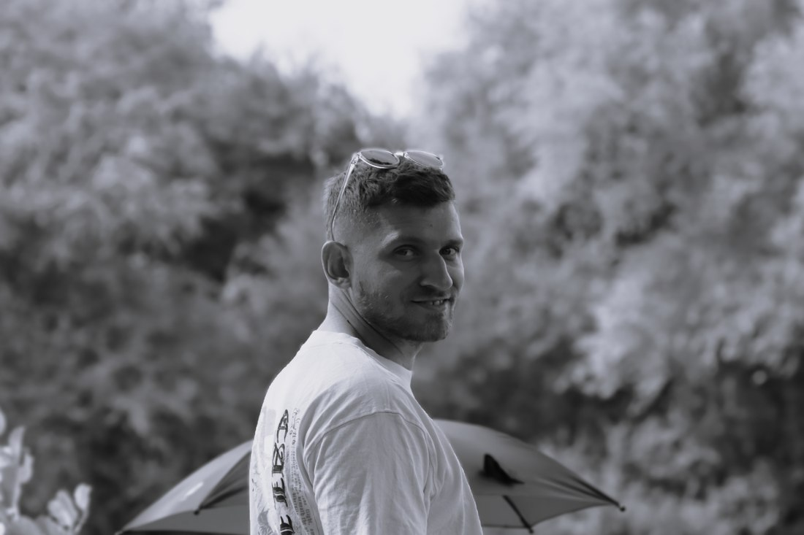
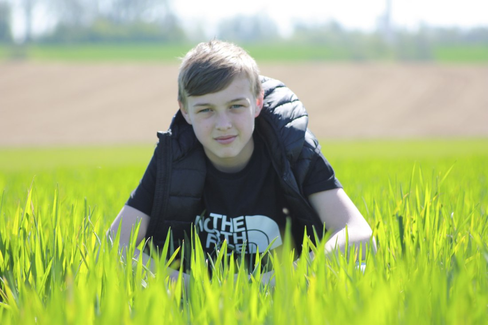
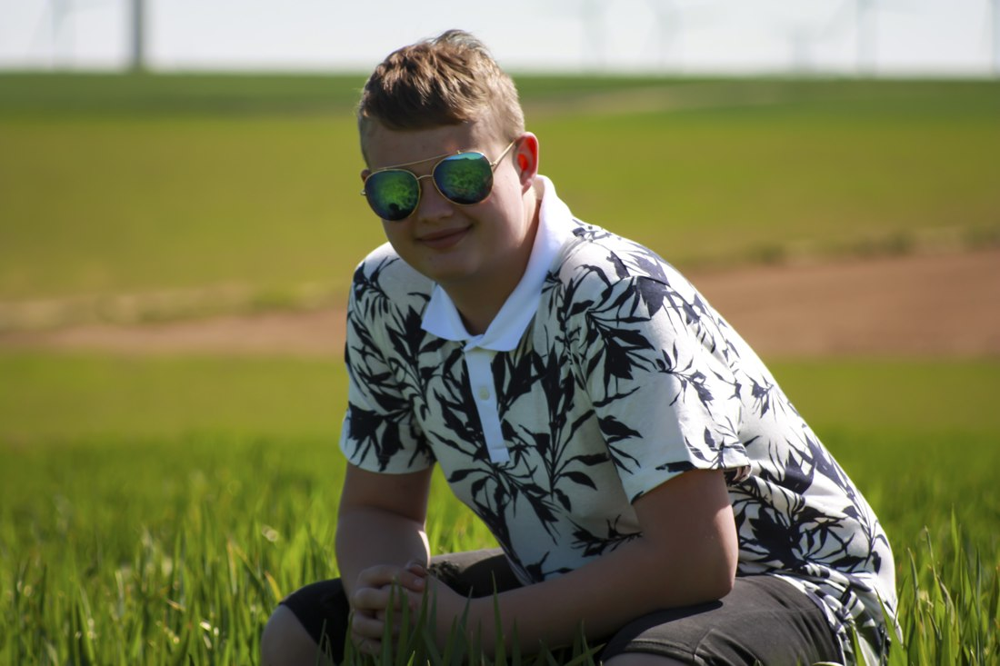
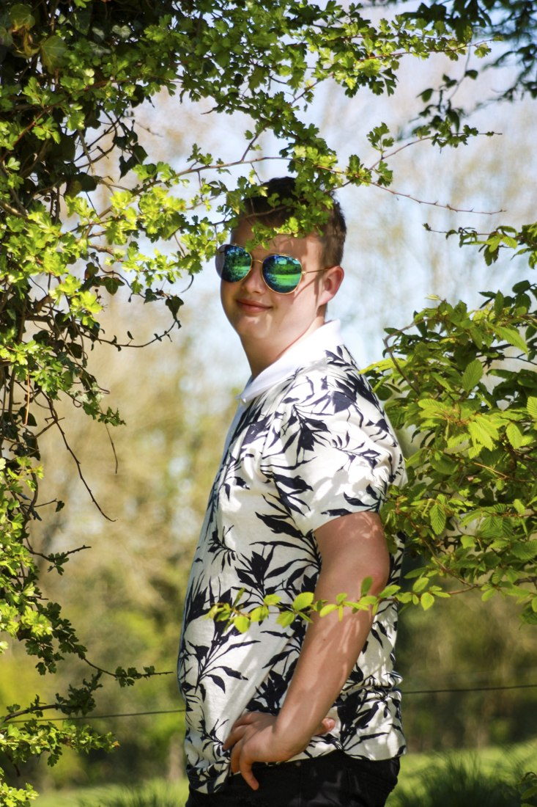
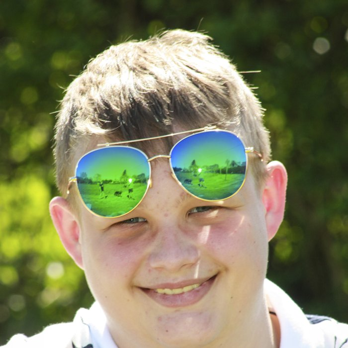
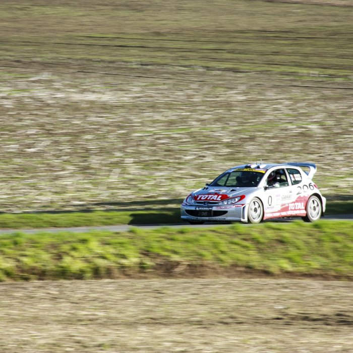
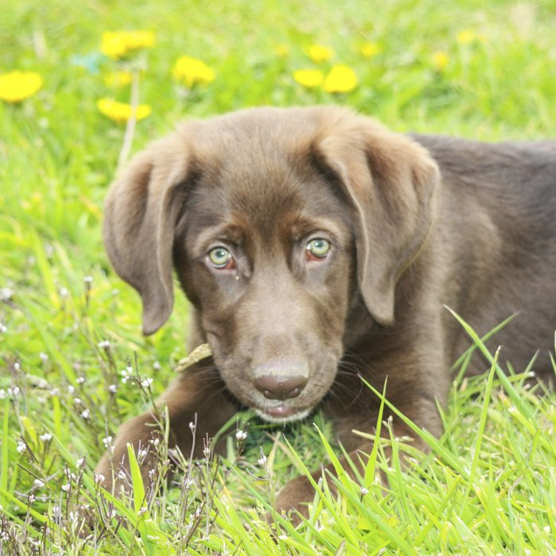
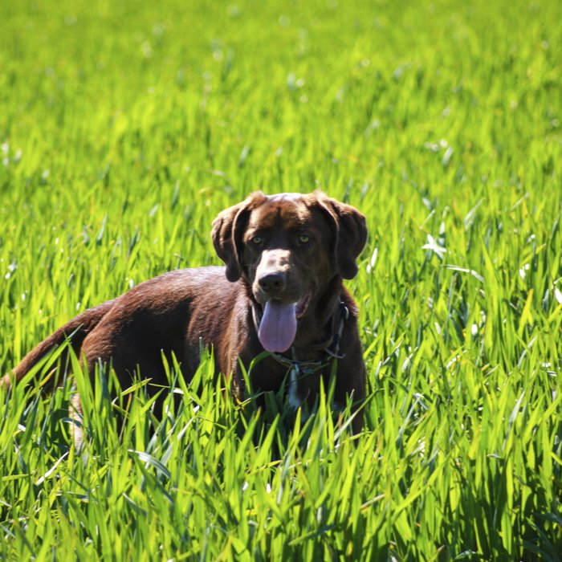
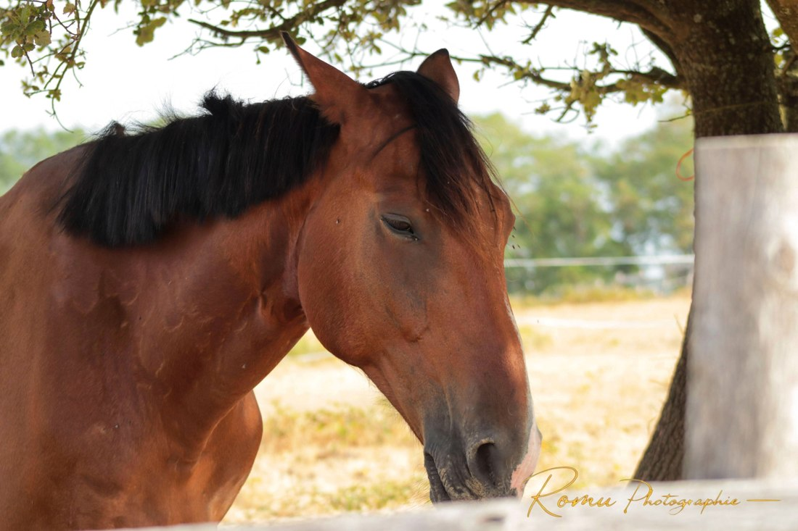
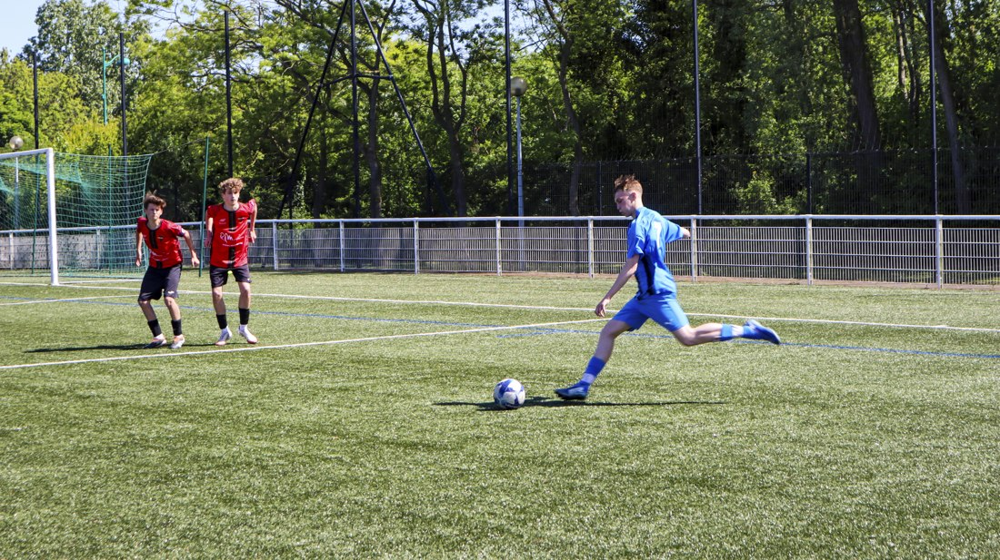
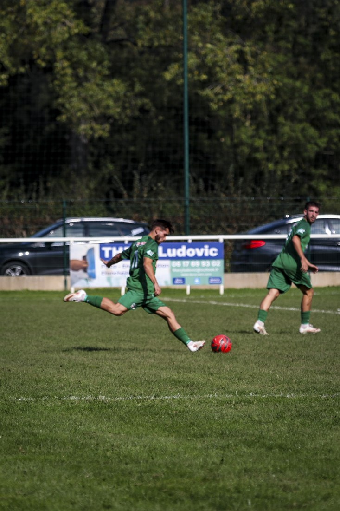
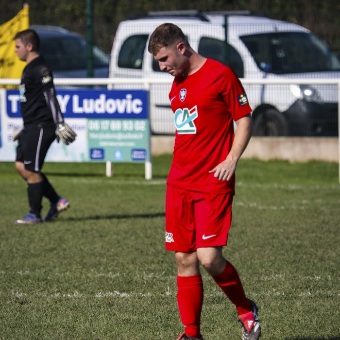
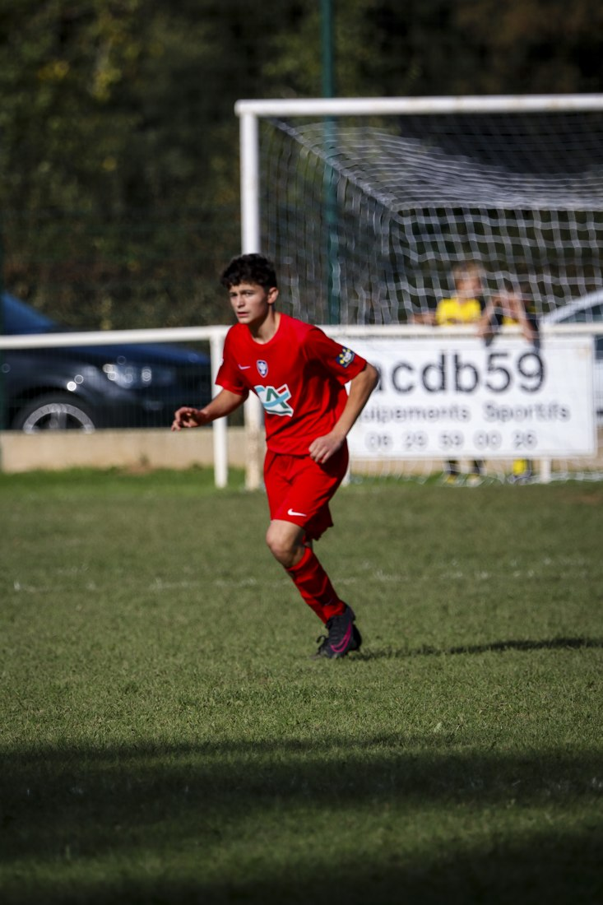
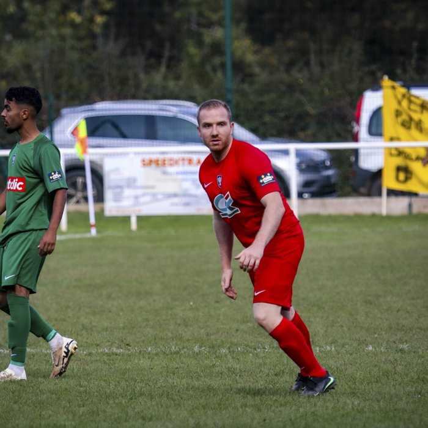
Déplacement
30 km inclus autour de Verchocq (62).
Au-delà : 0,50 €/km.
Contact
- Téléphone
- 06 76 40 69 08
- romu.photographie
- TikTok
- romu.photographie